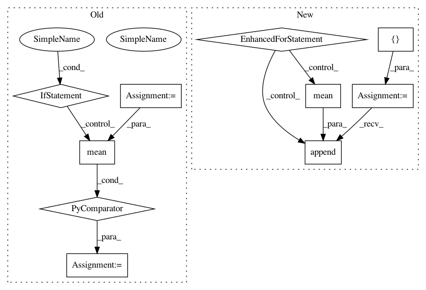

408f12dec2ff56559a26873a848a09e4c8facfeb,brainiak/isc.py,,isc,#Any#Any#Any#Any#,76
Before Change
elif pairwise:
iscs = squareform(np.corrcoef(voxel_data), checks=False)
elif not pairwise:
iscs = np.array([pearsonr(subject,
mean(np.delete(voxel_data,
s, axis=0),
axis=0))[0]
for s, subject in enumerate(voxel_data)])
voxel_iscs.append(iscs)
iscs_stack = np.column_stack(voxel_iscs)
// Get ISCs back into correct shape after masking out NaNs
After Change
elif not pairwise:
// Loop through left-out subjects
iscs_stack = []
for s in np.arange(n_subjects):
// Correlation between left-out subject and mean of others
iscs_stack.append(array_correlation(
data[..., s],
mean(np.delete(data, s, axis=2), axis=2)))
iscs_stack = np.array(iscs_stack)
// Get ISCs back into correct shape after masking out NaNs
iscs = np.full((iscs_stack.shape[0], n_voxels), np.nan)
In pattern: SUPERPATTERN
Frequency: 3
Non-data size: 10
Instances
Project Name: brainiak/brainiak
Commit Name: 408f12dec2ff56559a26873a848a09e4c8facfeb
Time: 2019-04-19
Author: sam.nastase@gmail.com
File Name: brainiak/isc.py
Class Name:
Method Name: isc
Project Name: catalyst-team/catalyst
Commit Name: f4beaac559e00a3676d942dc7e8fea69efc01cfe
Time: 2020-11-30
Author: raveforlive@gmail.com
File Name: catalyst/metrics/avg_precision.py
Class Name:
Method Name: mean_avg_precision